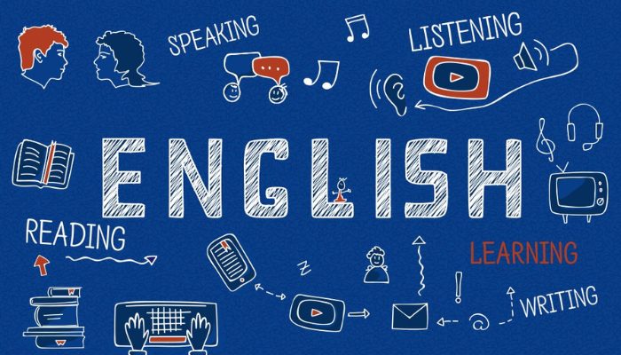

Course Planning notes

Foreign Language Credits
As an International Student, I do not need to take a foreign language. Speaking Spanish counts as my foreign language.
English 311: Shakespeare
I am planning to take it at Towson University during my Study Away.

English 218
No.
English 479
Yes, I am currently taking that class.

English 491
Do you want to take the credit-bearing or non-credit bearing? If non-credit, do you know which faculty member you might want to work with? I have not taken it. I am planning to take the credit-bearing in my last semester.
Survey Courses
ENGL 211: British Literature I. ENGL 221: American Literature I. ENGL 241: World Literature I. I do not need to take more surveys.
Genre and Focused Studies
I am interested in taking ENGL 229: Literature by Women, FNS 304: American Indian Literature, ENGL 331: British Literary Periods, ENGL 403: 19TH Century British Women Novelists, ENGL 449: Postcolonial Literature.

SURF or McNair
Yes, I am currently waiting for their response. I applied for the Fellowship Program (200hrs).